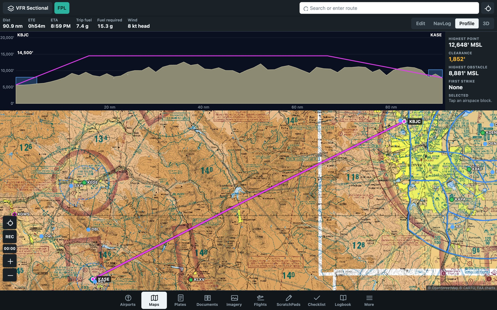

About Kestrel EFB
An electronic flight bag for pilots that costs nothing and asks for nothing.
An electronic flight bag for pilots that costs nothing and asks for nothing.

The American kestrel is the smallest falcon in North America. It hunts by hovering in place, facing into the wind, and watching the ground below.
Kestrel EFB does the same job for a pilot. It shows the ground, the wind and the weather along your route before you fly it.

Charts, plates and procedures come from the FAA. Weather comes from the National Weather Service. Both publish them at no cost.
There are no servers to pay for beyond free hosting, so there is nothing to charge for.
Read it, copy it or host your own on GitHub.



Report a problem or ask for a feature on GitHub.
Kestrel EFB is provided as is, with no warranty. Data comes from public sources and is not verified.
Photograph: "American Kestrel" by USFWS Mountain Prairie, CC BY 2.0, via Flickr. Charts and plates: FAA.